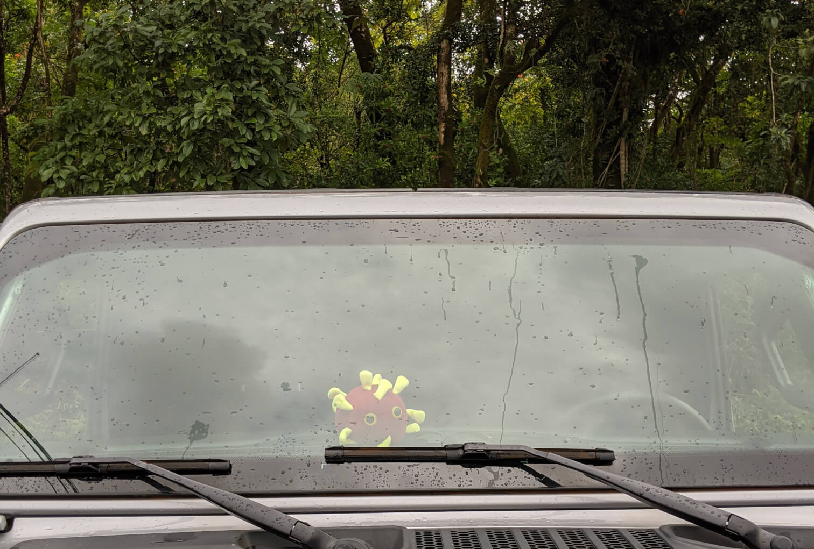

I’d never been to Hawaii or Maui before this year even though it’s a meer 5 hour flight and since I hadn’t done very much travel otherwise this year I jumped at the opportunity when my roommate suggested we go.
Because of the COVID-19 pandemic it was particularly cheap to travel and staying on the island was also cheaper then usual. Hawaii has been particularly cautious about trying to prevent the spread of the virus, and their efforts have been effective. Most of the Hawaiian islands have a dramatically lower infection-rate then the rest of the United States.
Hawaii should be extra cautious. They’re isolated and have much more control over who comes in and out of the islands compared to most states. They also have extra incentive to protect residents. Hawaii’s population is steadily aging at a faster rate then most of the United States. From 2010 to 2019 the elderly population (65+) of Hawaii grew by 62.3%. This older population is also disproportionately affected by the pandemic which are 90x more at risk of dying from COVID-19 compared to young adults.

Getting there safely
As the pandemic as worn on they’ve found ways of letting individuals visit safely. The way we traveled required us to “Arrive Healthy” and prove that by having a test within 72 hours of traveling. Once the results were received we then had to submit the test results on the Hawaii state “Safe Travels” website and await review.
Arrive Healthy: Mandatory pre-departure test submitted 72 hours prior to departing for Maui County.
When our flight landed we were still awaiting test results so we took a Lyft directly to where we were staying.
The Hawaiian governor has been writing a series of supplementary emergency proclamations which change policies throughout the islands. One of the policies the Hawaiian government set was to prevent car rentals for anyone who’s not exempt from quarantine. We weren’t aware of this before traveling so were surprised we weren’t able to get a car initially and had to take a fairly expensive Lyft to where we were staying while we waited for test results.
Quaratining
We wound up having to Quarantine for about 2 days.
Test results can vary in how long they take to be returned, in our case we were expecting them to come through within 24 - 72 hours so we took the tests about 48 hours before traveling. My results wound up taking about 72 hours and my roommate’s took almost a day longer then that. Apparently some results can take as long as 14 days though so there’s some risk of getting stuck waiting.
Some test results can take as long as 14 days to be processed by labs
While Quarantining you’re not allowed to leave to buy groceries or food. Delivery services on the islands can be lacking but there are a few services that provide delivery of most items. I wish I knew about 808 PickUps sooner which is a local business like DoorDash but with a larger local selection. Other services like Instacart also work fine for larger grocery deliveries.
Exploring the island
Once we left quarantine the island was fabulous. We only got stuck in traffic once where there was a construction closure and otherwise much of the island felt like a private paradise. Although it wasn’t busy anywhere many parking lots were still filling up pretty well. I was surprised when locals told us they were only at about 5% of the tourism capacity. I imagine with a full load of visitors it must be hell driving around so I understand some of the local disdain for tourists.
We didn’t have any negative experiences on the island but you could tell there was some tension in the air at some venues. Some locals were cautious but most were going about their business like it was any other year. Before we arrived many businesses had only just reopened within the last several weeks, or were still in the process of opening, and just as many were still closed.
In the more remote parts of the island and on the beaches we didn’t see many masks at all. This is about what we’d expected but I was still a little surprising considering the otherwise severe rules for entry to the island. At one bar it looked like business as usual, a packed house with no social distancing.
I wish I planned for a longer stay, but im back home now and brought COVID back with me. (Just this cute plushie!)